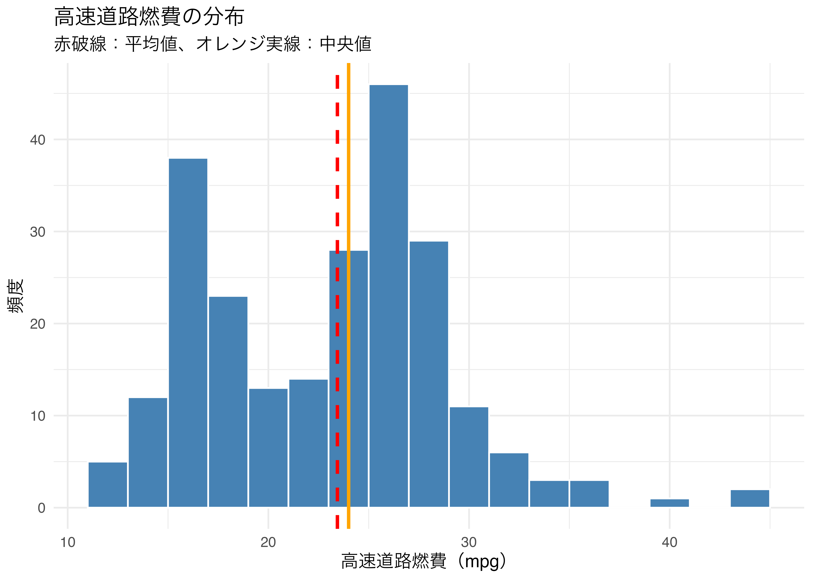
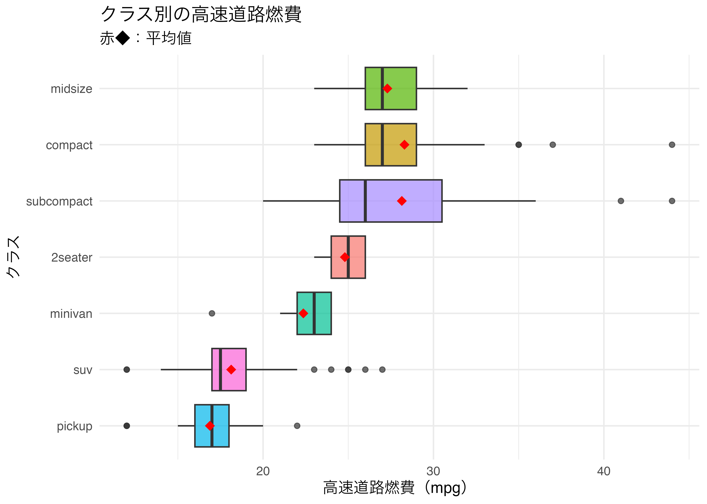
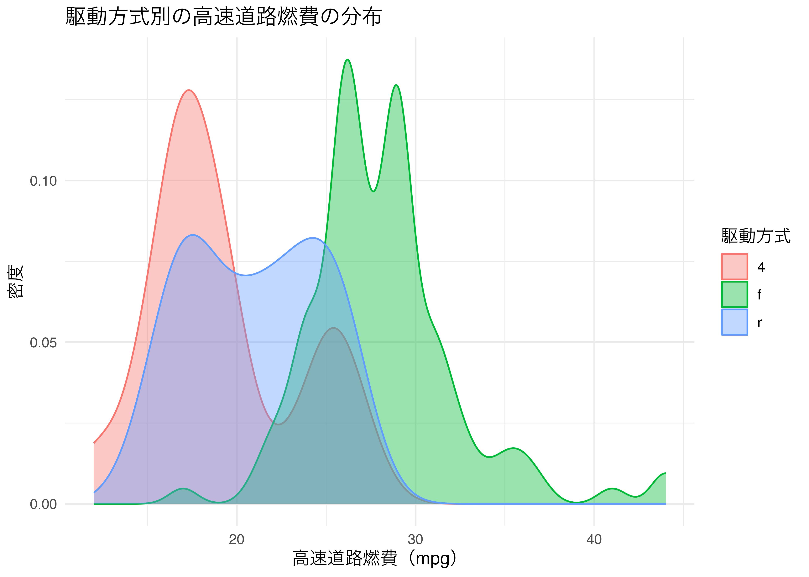
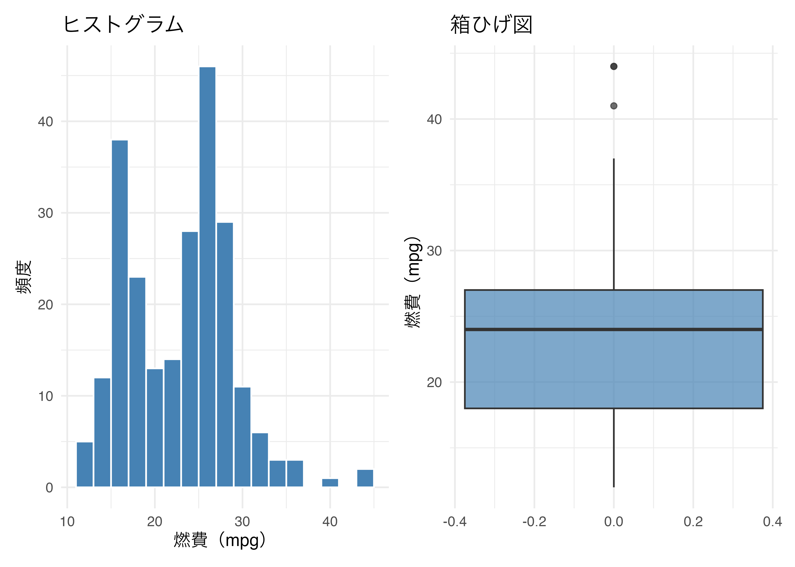
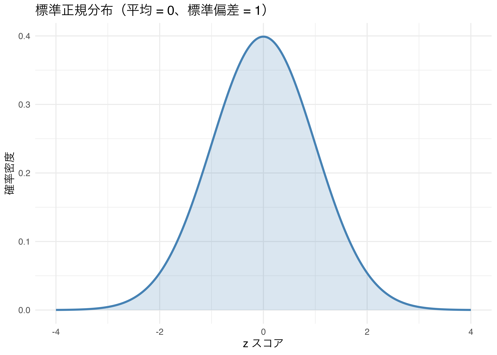

6 記述統計
データの特徴を数値で表す
今日の目標
- 記述統計量（平均・中央値・最頻値・分散・標準偏差・四分位数）の意味を理解する。
- R を使ってデータの記述統計量を計算・集計できるようになる。
- 記述統計量を可視化して、データの特徴を把握できるようになる。
6.1 パッケージの準備
大学のPCはシャットダウンする度に初期化されるため、毎回インストールが必要です。 毎回授業開始時にこのブロックを実行してください。
6.2 統計学の種類
統計学は大きく 2 種類に分類されます。
| 統計学の種類 | 特徴 |
|---|---|
| 記述統計学（descriptive statistics） | 統計量を使ってデータの傾向や性質をつかむ |
| 推測統計学（inferential statistics） | 母集団の母数（母平均・母分散）を検定・推定する |
今回は記述統計学を扱います。推測統計（仮説検定）は次回（第7回）で学びます。
6.3 記述統計量とは
記述統計量（descriptive statistics）とは、データの特徴を数値で要約したものです。 大きく「中心の指標」と「ばらつきの指標」に分けられます。
中心の指標
| 統計量 | 説明 | R の関数 |
|---|---|---|
| 平均値（mean） | 全データの合計をデータ数で割った値 | mean() |
| 中央値（median） | データを小さい順に並べたときの真ん中の値 | median() |
| 最頻値（mode） | 最も多く現れる値 | R に標準関数なし（後述） |
ばらつきの指標
| 統計量 | 説明 | R の関数 |
|---|---|---|
| 分散（variance） | 各データと平均値の差の二乗の平均 | var() |
| 標準偏差（standard deviation） | 分散の平方根。データと同じ単位で表せる | sd() |
| 範囲（range） | 最大値 − 最小値 | range()、max() - min() |
| 四分位数（quartile） | データを 4 等分する 3 つの値（Q1・Q2・Q3） | quantile() |
| 四分位範囲（IQR） | Q3 − Q1。外れ値の影響を受けにくい | IQR() |
平均値 vs 中央値
- 平均値：外れ値の影響を強く受ける
- 中央値：外れ値の影響を受けにくい
例：年収データのように極端に高い値がある場合、平均値は実態より高くなりがちです。 このような場合は中央値の方が「典型的な値」をよく表します。
6.4 データの準備
今回は ggplot2 付属の mpg（自動車燃費）データと gapminder パッケージのデータを使います。
Rows: 234
Columns: 11
$ manufacturer <chr> "audi", "audi", "audi", "audi", "audi", "audi", "audi", "…
$ model <chr> "a4", "a4", "a4", "a4", "a4", "a4", "a4", "a4 quattro", "…
$ displ <dbl> 1.8, 1.8, 2.0, 2.0, 2.8, 2.8, 3.1, 1.8, 1.8, 2.0, 2.0, 2.…
$ year <int> 1999, 1999, 2008, 2008, 1999, 1999, 2008, 1999, 1999, 200…
$ cyl <int> 4, 4, 4, 4, 6, 6, 6, 4, 4, 4, 4, 6, 6, 6, 6, 6, 6, 8, 8, …
$ trans <chr> "auto(l5)", "manual(m5)", "manual(m6)", "auto(av)", "auto…
$ drv <chr> "f", "f", "f", "f", "f", "f", "f", "4", "4", "4", "4", "4…
$ cty <int> 18, 21, 20, 21, 16, 18, 18, 18, 16, 20, 19, 15, 17, 17, 1…
$ hwy <int> 29, 29, 31, 30, 26, 26, 27, 26, 25, 28, 27, 25, 25, 25, 2…
$ fl <chr> "p", "p", "p", "p", "p", "p", "p", "p", "p", "p", "p", "p…
$ class <chr> "compact", "compact", "compact", "compact", "compact", "c…6.5 基本的な記述統計量の計算
個別の関数で計算する
[1] 23.44017[1] 24[1] 35.45778[1] 5.954643[1] 12 44[1] 9 0% 25% 50% 75% 100%
12 18 24 27 44 summary() で一括確認する
summary() 関数を使うと、主要な記述統計量を一度に確認できます。
データフレーム全体に適用することもできます。
displ cty hwy
Min. :1.600 Min. : 9.00 Min. :12.00
1st Qu.:2.400 1st Qu.:14.00 1st Qu.:18.00
Median :3.300 Median :17.00 Median :24.00
Mean :3.472 Mean :16.86 Mean :23.44
3rd Qu.:4.600 3rd Qu.:19.00 3rd Qu.:27.00
Max. :7.000 Max. :35.00 Max. :44.00 最頻値を求める
R には最頻値を直接求める標準関数がありません。 以下のように自分で定義するか、table() を使って頻度を確認します。
[1] 46.6 summarise() でグループ別の統計量を計算する
dplyr の group_by() と summarise() を組み合わせると、 グループ別の記述統計量をまとめて計算できます。
基本的な使い方
- 1
-
group_by(class)で車のクラスごとにグループ化 - 2
-
n()でグループ内のデータ件数を計算 - 3
- 各統計量を計算して列名を指定する
# A tibble: 7 × 7
class n mean_hwy median_hwy sd_hwy min_hwy max_hwy
<chr> <int> <dbl> <dbl> <dbl> <int> <int>
1 2seater 5 24.8 25 1.30 23 26
2 compact 47 28.3 27 3.78 23 44
3 midsize 41 27.3 27 2.14 23 32
4 minivan 11 22.4 23 2.06 17 24
5 pickup 33 16.9 17 2.27 12 22
6 subcompact 35 28.1 26 5.38 20 44
7 suv 62 18.1 17.5 2.98 12 27複数グループでの集計
- 1
- 複数の変数でグループ化できる
- 2
-
.groups = "drop"で集計後にグループを解除する
# A tibble: 12 × 5
class drv n mean_hwy sd_hwy
<chr> <chr> <int> <dbl> <dbl>
1 2seater r 5 24.8 1.30
2 compact 4 12 25.8 1.11
3 compact f 35 29.1 4.01
4 midsize 4 3 24 1
5 midsize f 38 27.6 1.98
6 minivan f 11 22.4 2.06
7 pickup 4 33 16.9 2.27
8 subcompact 4 4 26 0
9 subcompact f 22 30.5 5.26
10 subcompact r 9 23.2 2.17
11 suv 4 51 18.3 3.20
12 suv r 11 17.5 1.51across() で複数の列に同じ関数を適用する
- 1
-
統計量を計算したい列を
c()で指定 - 2
- 適用する関数をリストで指定
- 3
-
{.col}_{.fn}で「列名_関数名」という列名を自動生成
# A tibble: 7 × 7
class displ_mean displ_sd cty_mean cty_sd hwy_mean hwy_sd
<chr> <dbl> <dbl> <dbl> <dbl> <dbl> <dbl>
1 2seater 6.16 0.532 15.4 0.548 24.8 1.30
2 compact 2.33 0.452 20.1 3.39 28.3 3.78
3 midsize 2.92 0.719 18.8 1.95 27.3 2.14
4 minivan 3.39 0.453 15.8 1.83 22.4 2.06
5 pickup 4.42 0.829 13 2.05 16.9 2.27
6 subcompact 2.66 1.10 20.4 4.60 28.1 5.38
7 suv 4.46 1.07 13.5 2.42 18.1 2.986.7 記述統計量の可視化
数値だけでなく、グラフでデータの分布を確認することも重要です。
ヒストグラムで分布を確認する
ggplot(data = mpg, aes(x = hwy)) +
geom_histogram(binwidth = 2, fill = "steelblue", color = "white") +
geom_vline(xintercept = mean(mpg$hwy),
color = "red", linetype = "dashed", linewidth = 1) +
geom_vline(xintercept = median(mpg$hwy),
color = "orange", linetype = "solid", linewidth = 1) +
labs(
title = "高速道路燃費の分布",
subtitle = "赤破線：平均値、オレンジ実線：中央値",
x = "高速道路燃費（mpg）",
y = "頻度"
) +
theme_minimal()- 1
-
binwidthでビンの幅を指定 - 2
-
geom_vline()で平均値に縦の破線を追加 - 3
- 中央値に縦の実線を追加

箱ひげ図でグループ比較する
ggplot(data = mpg, aes(x = reorder(class, hwy, median), y = hwy, fill = class)) +
geom_boxplot(alpha = 0.7) +
stat_summary(fun = mean, geom = "point",
shape = 18, size = 3, color = "red") +
coord_flip() +
labs(
title = "クラス別の高速道路燃費",
subtitle = "赤◆：平均値",
x = "クラス",
y = "高速道路燃費（mpg）"
) +
theme_minimal() +
theme(legend.position = "none")- 1
-
stat_summary()で平均値を点（◆）として追加

密度曲線（geom_density()）
ヒストグラムをなめらかにした曲線で、データの分布形状を確認できます。
- 1
-
alphaで透過率を設定。重なり合う部分が見えやすくなる

patchwork で複数グラフを並べる
p1 <- ggplot(data = mpg, aes(x = hwy)) +
geom_histogram(binwidth = 2, fill = "steelblue", color = "white") +
labs(title = "ヒストグラム", x = "燃費（mpg）", y = "頻度") +
theme_minimal()
p2 <- ggplot(data = mpg, aes(y = hwy)) +
geom_boxplot(fill = "steelblue", alpha = 0.7) +
labs(title = "箱ひげ図", y = "燃費（mpg）") +
theme_minimal()
p1 + p2- 1
-
+で横に並べる。/を使うと縦に並ぶ

6.8 正規分布と標準化
正規分布とは
正規分布（normal distribution）は、平均値を中心に左右対称の釣り鐘型をした分布です。 多くの自然現象や社会現象において、データは正規分布に近い形になります。
| 特徴 | 内容 |
|---|---|
| 平均 ± 1σ の範囲 | 全データの約 68.3% が含まれる |
| 平均 ± 2σ の範囲 | 全データの約 95.4% が含まれる |
| 平均 ± 3σ の範囲 | 全データの約 99.7% が含まれる |
正規分布の可視化
# 正規分布のデータを生成して可視化
tibble(x = seq(-4, 4, length.out = 300)) |>
mutate(y = dnorm(x, mean = 0, sd = 1)) |>
ggplot(aes(x = x, y = y)) +
geom_line(color = "steelblue", linewidth = 1) +
geom_area(alpha = 0.2, fill = "steelblue") +
labs(
title = "標準正規分布（平均 = 0、標準偏差 = 1）",
x = "z スコア",
y = "確率密度"
) +
theme_minimal()- 1
-
dnorm(x, mean, sd)で正規分布の確率密度を計算

標準化（z スコア）
標準化とは、データを「平均 0、標準偏差 1」の分布に変換することです。 単位の異なるデータを比較するときに使います。
\[z = \frac{x - \bar{x}}{s}\]
- 1
-
(値 - 平均) / 標準偏差で z スコアを計算
# A tibble: 10 × 4
manufacturer model hwy hwy_z
<chr> <chr> <int> <dbl>
1 volkswagen jetta 44 3.45
2 volkswagen new beetle 44 3.45
3 volkswagen new beetle 41 2.95
4 toyota corolla 37 2.28
5 honda civic 36 2.11
6 honda civic 36 2.11
7 toyota corolla 35 1.94
8 toyota corolla 35 1.94
9 honda civic 34 1.77
10 honda civic 33 1.616.9 演習問題
記述統計量の計算
mpg データを使って、シリンダー数（cyl）別の市街地燃費（cty）の記述統計量を計算してください。
ただし、以下の条件を満たしてください。
group_by(cyl)でシリンダー数ごとにグループ化するsummarise()で以下の統計量を計算するn：データ件数（n()）mean_cty：平均値median_cty：中央値sd_cty：標準偏差min_cty：最小値max_cty：最大値
.groups = "drop"でグループを解除する
可視化
mpg データを使って、排気量（displ）のヒストグラムを描き、 平均値と中央値を縦線で追加してください。
ただし、以下の条件を満たしてください。
binwidth = 0.5fill = "tomato",color = "white"- 平均値：赤の破線（
"dashed"） - 中央値：青の実線（
"solid"） - X 軸ラベル：「排気量（リットル）」
- Y 軸ラベル：「頻度」
- タイトル：「排気量の分布」
- テーマ：
theme_classic()
ggplot(data = ___, aes(x = ___)) +
geom_histogram(binwidth = ___, fill = ___, color = ___) +
geom_vline(xintercept = mean(___$___),
color = "red", linetype = "dashed", linewidth = 1) +
geom_vline(xintercept = median(___$___),
color = "blue", linetype = "solid", linewidth = 1) +
labs(title = ___, x = ___, y = ___) +
theme_classic()mpg データを使って、駆動方式（drv）別の高速道路燃費（hwy）の 密度曲線を描いてください。
ただし、以下の条件を満たしてください。
fill = drv,color = drvで駆動方式ごとに色を変えるalpha = 0.4で透過率を設定する- X 軸ラベル：「高速道路燃費（mpg）」
- Y 軸ラベル：「密度」
- タイトル：「駆動方式別の燃費分布」
- 凡例タイトル（
fill,color）：「駆動方式」 - テーマ：
theme_minimal()
mpg データを使って、patchwork を使って以下の 2 つのグラフを横に並べて表示してください。
- 左：
cyl（シリンダー数）別のhwy（高速道路燃費）の箱ひげ図x = factor(cyl),y = hwy,fill = factor(cyl)- タイトル：「シリンダー数別の燃費（箱ひげ図）」
- テーマ：
theme_minimal()、凡例非表示
- 右：
cyl（シリンダー数）別のhwy（高速道路燃費）の密度曲線x = hwy,fill = factor(cyl),alpha = 0.4- タイトル：「シリンダー数別の燃費（密度曲線）」
- テーマ：
theme_minimal()
p1 <- ggplot(data = ___, aes(x = ___, y = ___, fill = ___)) +
geom_boxplot() +
labs(title = ___) +
theme_minimal() +
theme(legend.position = "none")
p2 <- ggplot(data = ___, aes(x = ___, fill = ___)) +
geom_density(alpha = ___) +
labs(title = ___, fill = "シリンダー数") +
theme_minimal()
___ + ___ # patchwork で横に並べるacross() を使った複数列への統計量計算
mpg データを使って、クラス（class）別に 排気量（displ）・市街地燃費（cty）・高速道路燃費（hwy）の 平均値と標準偏差を across() でまとめて計算してください。
ただし、以下の条件を満たしてください。
group_by(class)でグループ化するacross()でc(displ, cty, hwy)にmeanとsdを適用する.names = "{.col}_{.fn}"で列名を自動生成する.groups = "drop"でグループを解除する
標準化（z スコア）
mpg データを使って、市街地燃費（cty）を標準化（z スコア化）してください。
ただし、以下の手順で実行してください。
mutate()でcty_z = (cty - mean(cty)) / sd(cty)を計算するselect()でmanufacturer・model・cty・cty_zの列を選択するarrange(desc(cty_z))で z スコアの高い順に並べ替えるhead(10)で上位 10 件を表示する
patchwork で 3 グラフを組み合わせる
mpg データを使って、patchwork で以下の 3 つのグラフを (p1 + p2) / p3 の形式で表示してください。
- p1：
hwyのヒストグラム（binwidth = 2、fill = "steelblue"）- タイトル：「ヒストグラム」
- p2：
hwyの箱ひげ図（fill = "steelblue",alpha = 0.7）- タイトル：「箱ひげ図」
- p3：
hwyの密度曲線（fill = "steelblue",alpha = 0.4）- タイトル：「密度曲線」
- 3 つとも
theme_minimal()、X 軸ラベル：「高速道路燃費（mpg）」
p1 <- ggplot(data = ___, aes(x = ___)) +
geom_histogram(binwidth = ___, fill = ___) +
labs(title = ___, x = ___) +
theme_minimal()
p2 <- ggplot(data = ___, aes(y = ___)) +
geom_boxplot(fill = ___, alpha = ___) +
labs(title = ___, y = ___) +
theme_minimal()
p3 <- ggplot(data = ___, aes(x = ___)) +
geom_density(fill = ___, alpha = ___) +
labs(title = ___, x = ___) +
theme_minimal()
(___ + ___) / ___summary() の結果をグラフと照合する
mpg データの 高速道路燃費（hwy） について、以下の手順で 平均値・中央値の位置をヒストグラムで確認してください。
- まず
summary(mpg$hwy)を実行して平均値と中央値を確認する geom_histogram(binwidth = 2)でヒストグラムを描くgeom_vline()で平均値（赤破線）と中央値（青実線）を追加するsubtitleに「赤破線：平均値 XX.X、青実線：中央値 XX.X」と記載する （XX.X はsummary()で確認した実際の値を入れる）- テーマ：
theme_minimal()
# まず summary で確認
summary(mpg$hwy)
# ヒストグラムに平均・中央値を重ねる
ggplot(data = ___, aes(x = ___)) +
geom_histogram(binwidth = ___, fill = "steelblue", color = "white") +
geom_vline(xintercept = mean(___$___),
color = "red", linetype = "dashed", linewidth = 1) +
geom_vline(xintercept = median(___$___),
color = "blue", linetype = "solid", linewidth = 1) +
labs(
title = "高速道路燃費の分布",
subtitle = "赤破線：平均値 ___、青実線：中央値 ___",
x = "高速道路燃費（mpg）",
y = "頻度"
) +
theme_minimal()gapminder データで記述統計
gapminder データを使って、大陸（continent）別の平均寿命（lifeExp）の 記述統計量を計算し、箱ひげ図で可視化してください。
ステップ1：記述統計量の計算
group_by(continent)でグループ化するsummarise()で以下を計算するn：データ件数mean_lifeExp：平均値median_lifeExp：中央値sd_lifeExp：標準偏差min_lifeExp：最小値max_lifeExp：最大値
.groups = "drop"でグループを解除する
ステップ2：箱ひげ図の作成
x = reorder(continent, lifeExp, median)（中央値順）y = lifeExp,fill = continentstat_summary()で平均値を赤◆（shape = 18, size = 3, color = "red"）で表示coord_flip()で横向きにする- タイトル：「大陸別の平均寿命」、X 軸：「大陸」、Y 軸：「平均寿命（年）」
- テーマ：
theme_minimal()、凡例非表示
# ステップ1：記述統計量
gapminder |>
group_by(___) |>
summarise(
n = ___,
mean_lifeExp = ___,
median_lifeExp = ___,
sd_lifeExp = ___,
min_lifeExp = ___,
max_lifeExp = ___,
.groups = "drop"
)
# ステップ2：箱ひげ図
ggplot(data = ___, aes(x = reorder(___, ___, ___), y = ___, fill = ___)) +
geom_boxplot(alpha = 0.7) +
stat_summary(fun = mean, geom = "point",
shape = ___, size = ___, color = ___) +
coord_flip() +
labs(title = ___, x = ___, y = ___) +
theme_minimal() +
theme(legend.position = "none")6.10 まとめ
本日学んだこと
主要な記述統計量と R の関数
| 統計量 | R の関数 | 意味 |
|---|---|---|
| 平均値 | mean() |
データの重心 |
| 中央値 | median() |
外れ値に強い中心の指標 |
| 分散 | var() |
ばらつきの指標（単位が二乗） |
| 標準偏差 | sd() |
ばらつきの指標（元の単位） |
| 四分位数 | quantile() |
データを 4 等分する値 |
| 四分位範囲 | IQR() |
Q3 − Q1 |
| 一括確認 | summary() |
主要統計量を一度に表示 |
グループ別集計の流れ
次回の予告
第 7 回では、推測統計（仮説検定）を学習します。
- 母集団と標本の関係
- t 検定（平均値の差の検定）
- 相関係数と相関検定